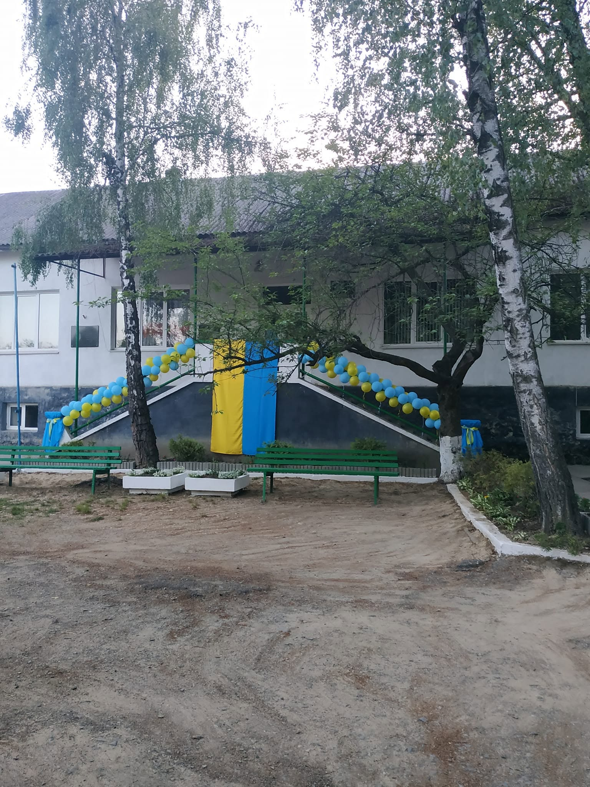

Save photo as school.jpgOur school is the school of Onok in Zakkarpatia. It teaches grades 1 - 12, separated into: 1. primary school: class 1 - 4, they study in the building closer to the entrance overall. Then there is middle school: classes 5 - 9, they study in the building a bit further from the other building, and in high school they also study in the same building as classes 5 - 9. The school was founded in the 19th century.